The honest practitioner's take on agentic AI on Kubernetes
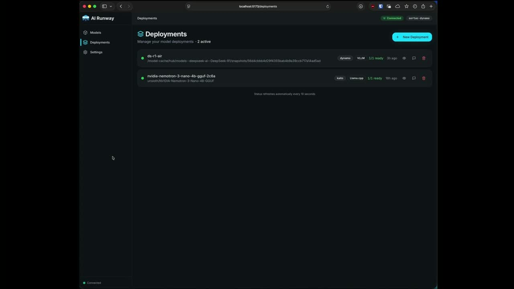
Official description
Agentic AI workloads don't behave like normal services. They're stateful, bursty, multi-step, and often span more than a single cluster. Most teams figure this out the hard way. This session is for developers building agentic AI in production. We'll show you how to get the most out of Kubernetes for training, inference, and agent orchestration, covering purpose-built tooling, managed options, open-source inference at scale, and AI-assisted dev tools that support real-world AI operations. Seating for this session is first-come, first-served. Add it to your schedule to plan your day and arrive early to secure a spot.
Summary
Overview
A practitioner-oriented walkthrough of running agentic AI workloads on Kubernetes and Azure Kubernetes Service (AKS), arguing that inference, training, and agent orchestration are three distinct workload types that Kubernetes can host but only with additional layers on top. The session frames the trade-off between fully managed AI platforms and a composable, self-managed Kubernetes substrate, then walks a four-layer stack with live demos and customer examples.
Key announcements
- Anyscale on Azure (managed Ray) public preview — Around 00:25:11m05s
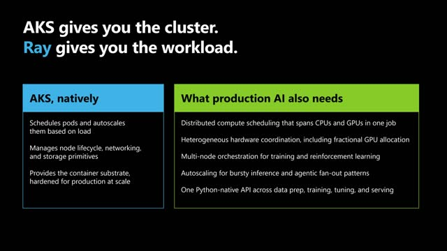
m10sp05s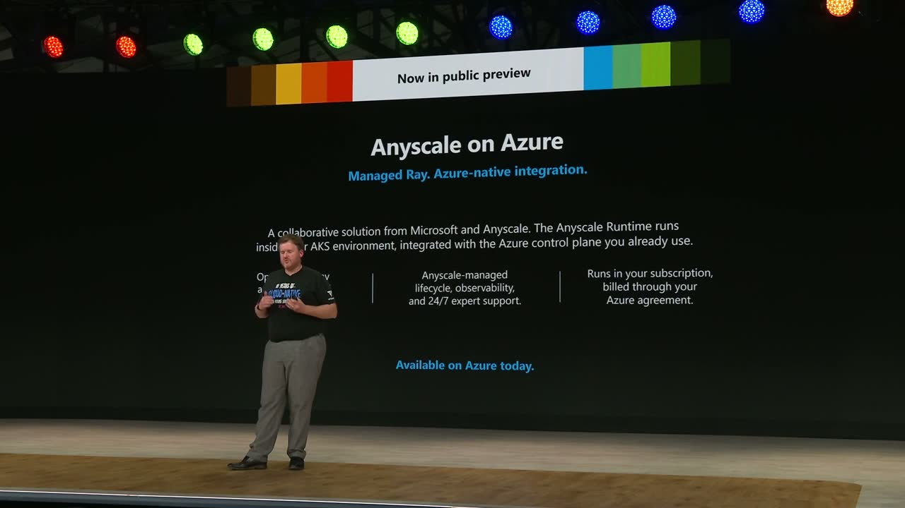
p10s, an Azure-native, Entra ID-integrated managed Ray runtime that runs inside the customer's AKS subscription with unified Azure billing, keeping data and model weights in-tenant. - Agent reference stack for Kubernetes ("CARS") — Around 00:38:19
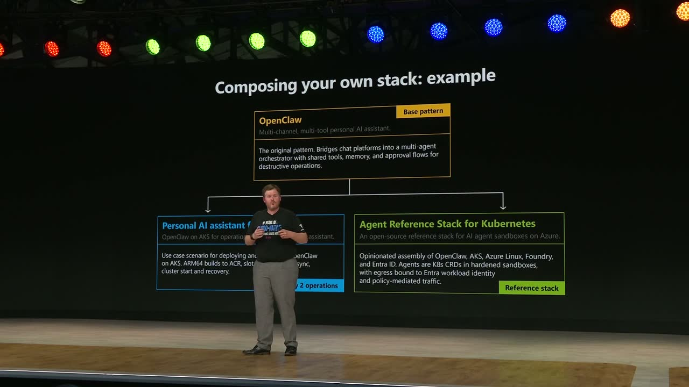
m05s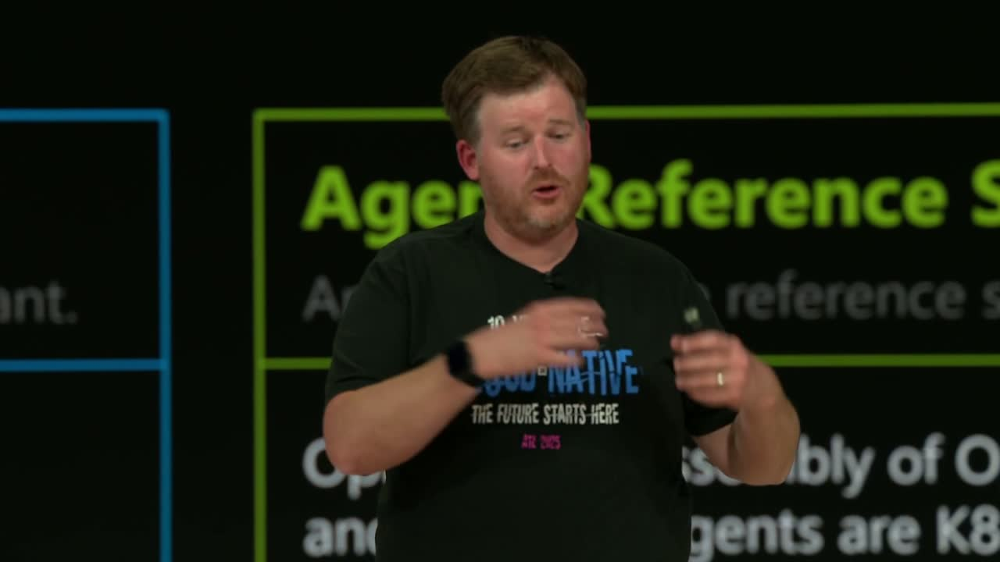
m10sp05s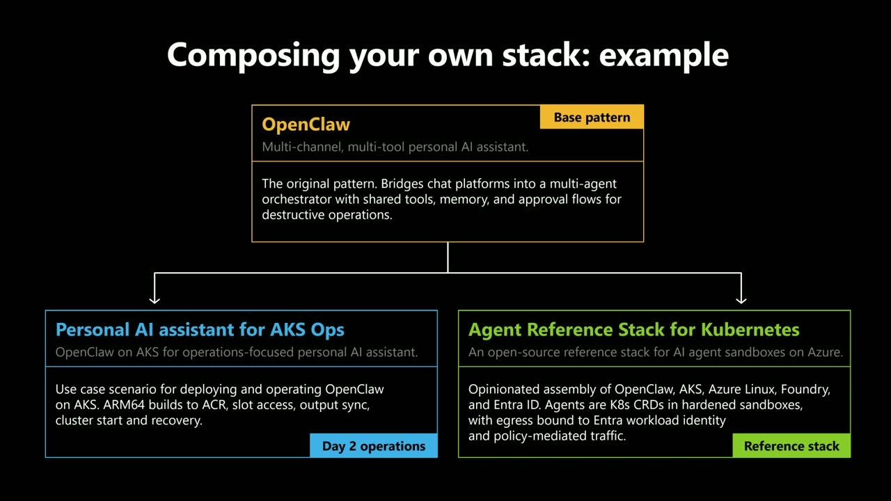
p10s, released the same day; a vertically integrated secure sandbox for agents using workload identity policies and Azure Linux under the hood, deployable with a singlecars upcommand. - AKS Automatic with managed system node pools (GA) — Around 00:42:54
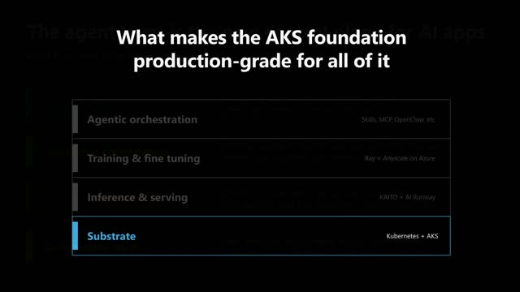
m05s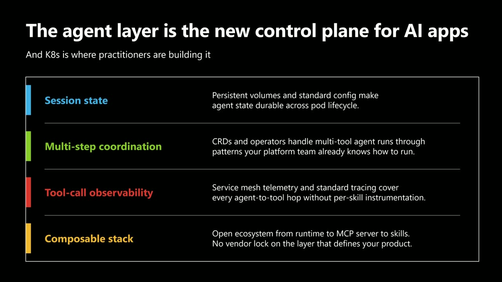
m10s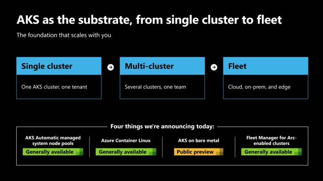
p05s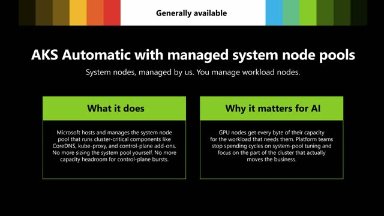
p10s, Azure now manages and scales the Kubernetes system components so they don't consume GPU nodes reserved for AI workloads. - Azure Linux container host (GA) — Around 00:43:32
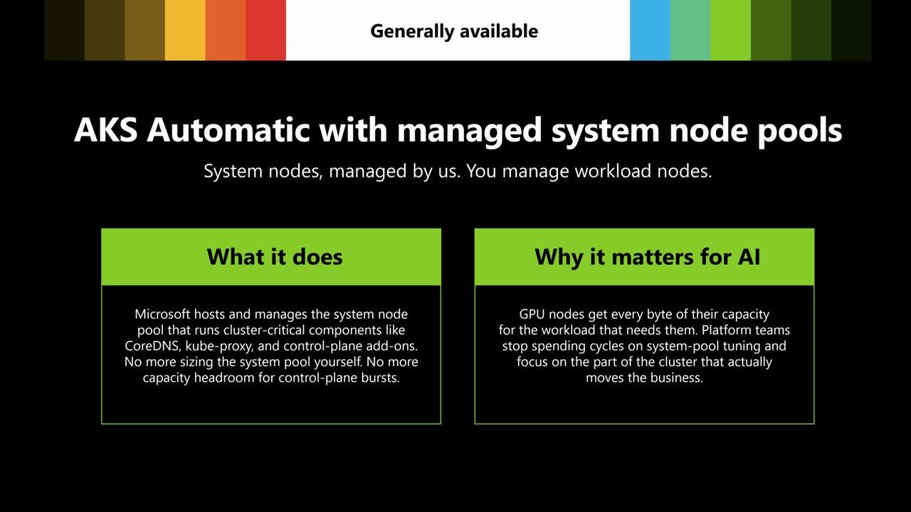
m05sm10sp05s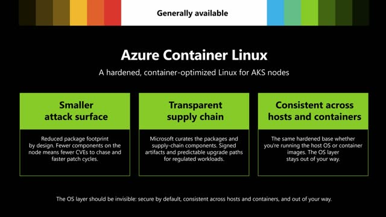
p10s, a hardened OS with smaller attack surface, fewer CVEs, signed artifacts, and predictable patching, runnable in containers, on VMs, or in WSL. - AKS on bare metal (public preview) — Around 00:44:19m05s
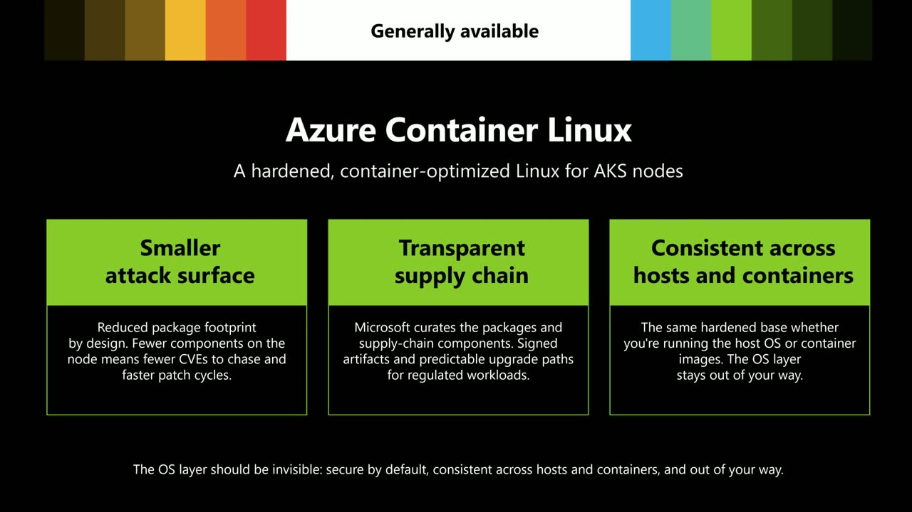
m10s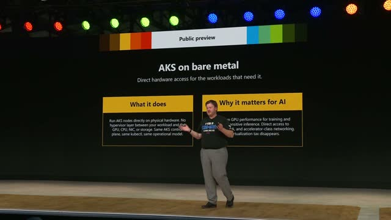
p05s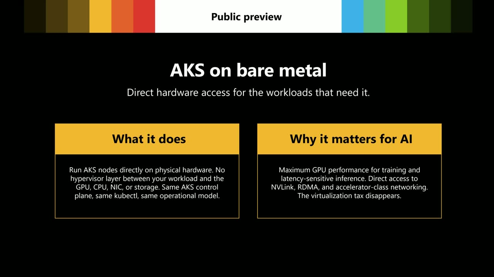
p10s, direct hardware access with no hypervisor, avoiding the virtualization tax for GPUs, NICs, and accelerators on-premises. - Fleet for Arc-enabled clusters — Around 00:44:58
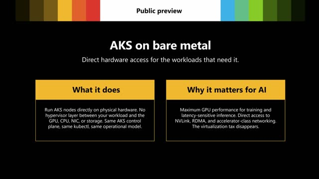
m05sm10s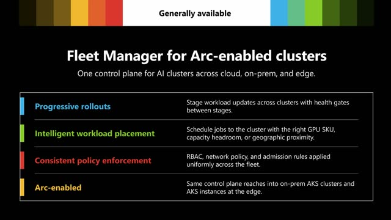
p05sp10s, progressive rollouts, intelligent workload placement, and consistent policy enforcement across on-prem and edge clusters under one Azure control plane.
{kind=link}
{kind=link}
{kind=link}
{kind=link}
{kind=link}
{kind=link}
{kind=link}
{kind=link}
{kind=link}
{kind=link}
{kind=link}
{kind=link}
{kind=link}
{kind=link}
{kind=link}
{kind=link}
{kind=link}
{kind=link}
{kind=link}
{kind=link}
{kind=link}
{kind=link}
{kind=link}
{kind=link}
Topics covered
- Trade-offs between managed AI platforms (e.g. Microsoft Foundry) and composable Kubernetes substrates: control, open tooling, data sovereignty, unit economics, and operational complexity.
- The three distinct AI workload profiles—inference (millisecond latency, often single-node), training (throughput-bound, checkpoint-sensitive), and agentic systems (stateful, multimodal, tool-calling).
- Gaps Kubernetes must close for AI: gang scheduling and queuing, heterogeneous hardware and topology awareness, scaling on AI signals (tokens/sec, queue depth, GPU utilization), and durable state.
- Inference and serving with AI Runway (platform layer with model catalog and GPU-fit indicator) and Kaito/KAITO (operations layer with presets and KV-cache-aware routing).
- Training and fine-tuning with Ray, including fractional GPU allocation and a product-catalog embedding fine-tune demo.
- Agentic orchestration with skills, MCP (including the AKS MCP server), and OpenClaw, plus namespace isolation and service mesh for security.
- Day-2 operations encoded as agents (AKS Claw) for on-call support engineers.
Notable quotes
"Kubernetes is a big hammer, and with a big hammer, everything looks like a nail. Kubernetes isn't always the right fit, but in some cases it is the right fit."
"Ralph went through that in 3 minutes. What used to take me 3 weeks to get up and running."
"So super powerful platform and in only 7 minutes that took me 3 months to do."
Products and tools mentioned
- Azure Kubernetes Service (AKS)
- Microsoft Foundry
- AI Runway
- Kaito (Kubernetes AI Toolchain Operator)
- vLLM, SGLang, TensorRT, llama.cpp
- NVIDIA Dynamo, KubeRay, llm-d
- Ray / Anyscale on Azure
- Hugging Face
- DeepSeek-R1, Qwen, Phi, Llama [inferred]
- Azure Managed Lustre
- Gateway API inference extension, Istio
- Model Context Protocol (MCP), AKS MCP server
- OpenClaw
- CARS (agent reference stack for Kubernetes)
- Azure Linux
- Headlamp
- AKS Automatic, AKS on bare metal, Fleet for Arc-enabled clusters
- Entra ID, Azure Key Vault, Azure Container Registry (ACR)
- AKS Claw
- Dapr [inferred]
Speakers featured
- Lachlan "Lachie" Evenson — presenter, longtime Kubernetes practitioner (10+ years)
- Ralph — colleague, narrator of the AI Runway demo (referenced, not presenting live)
- Bob — colleague who assisted with the Anyscale on Azure demo
Follow-up resources
- The referenced open-source tools (AI Runway, Kaito, CARS, Headlamp) were described as available on GitHub, though no specific URLs were given in the transcript.
Frames
{kind=link}
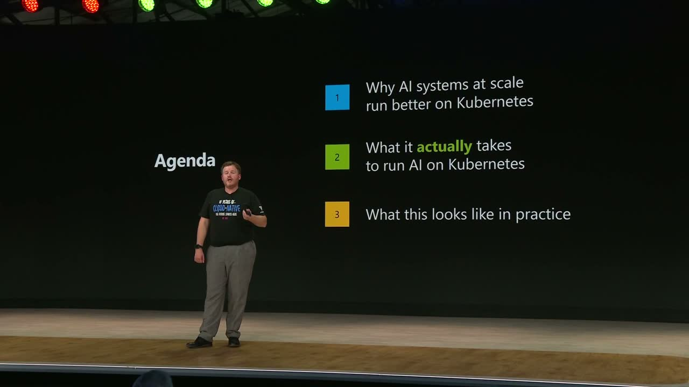
{kind=link}
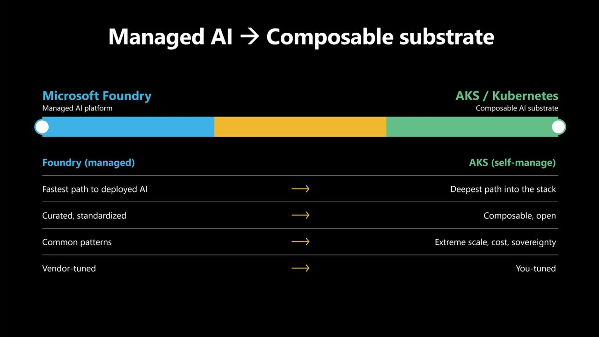
{kind=link}
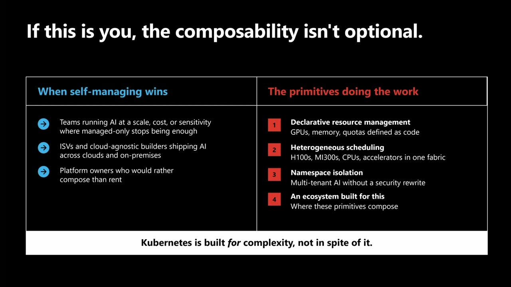
{kind=link}
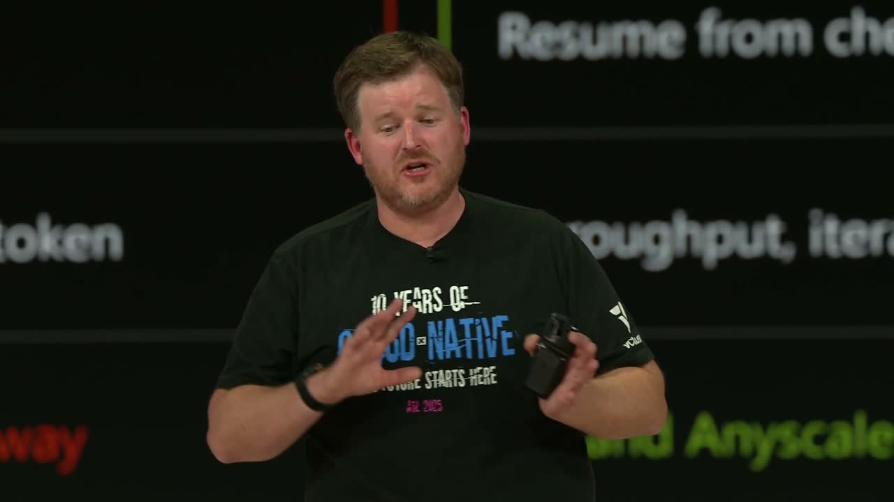
{kind=link}
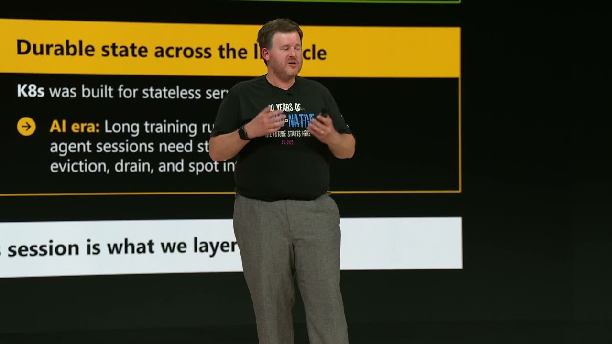
{kind=link}
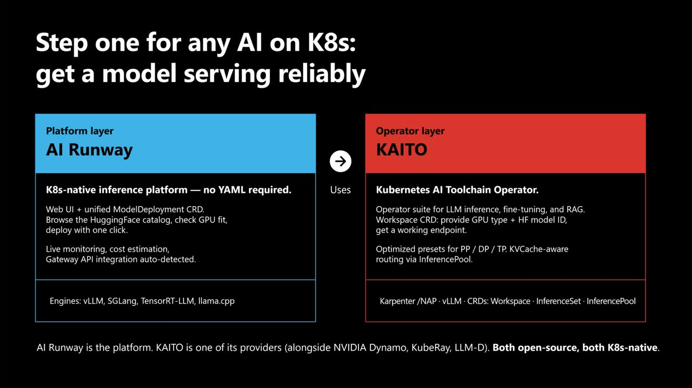
{kind=link}
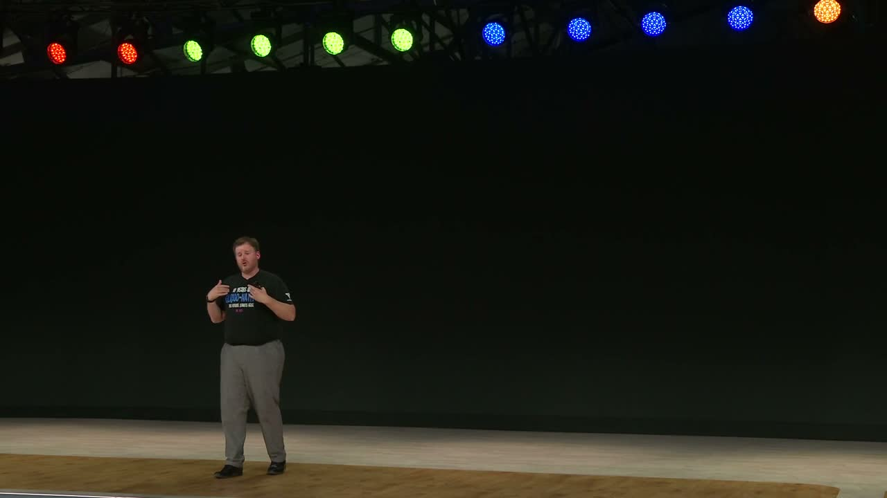
{kind=link}
{kind=link}
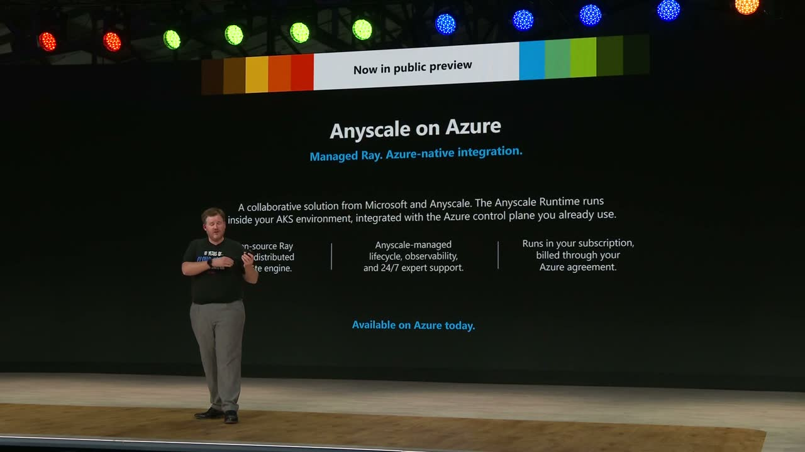
{kind=link}
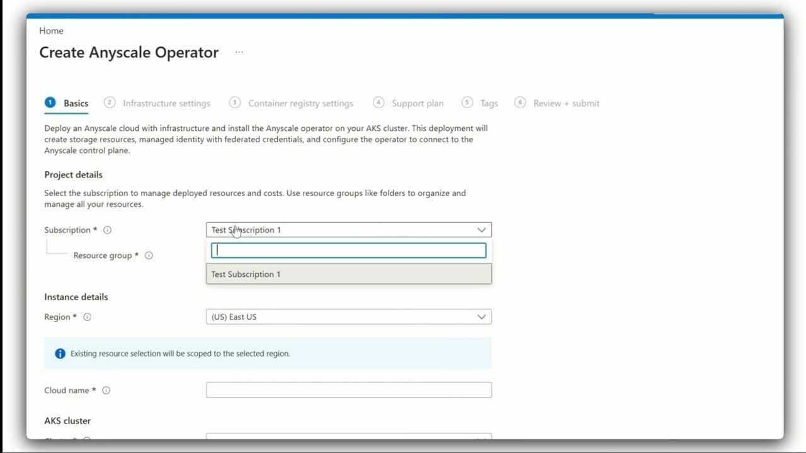
{kind=link}
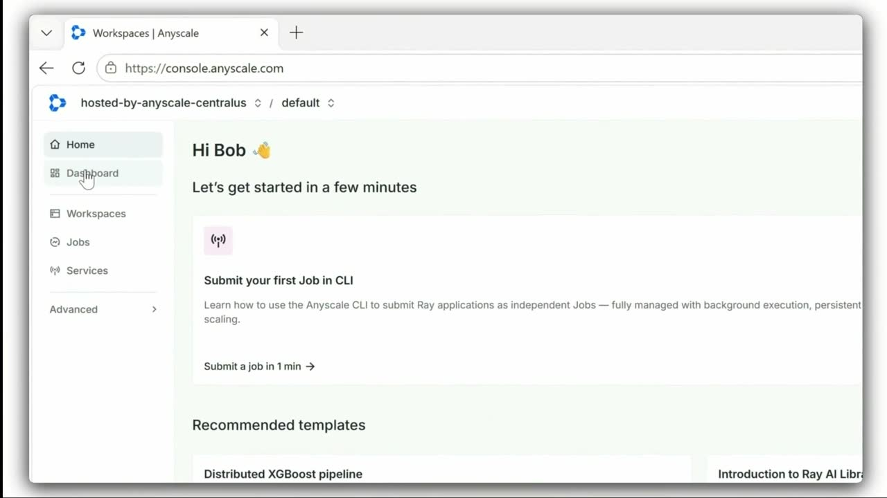
{kind=link}
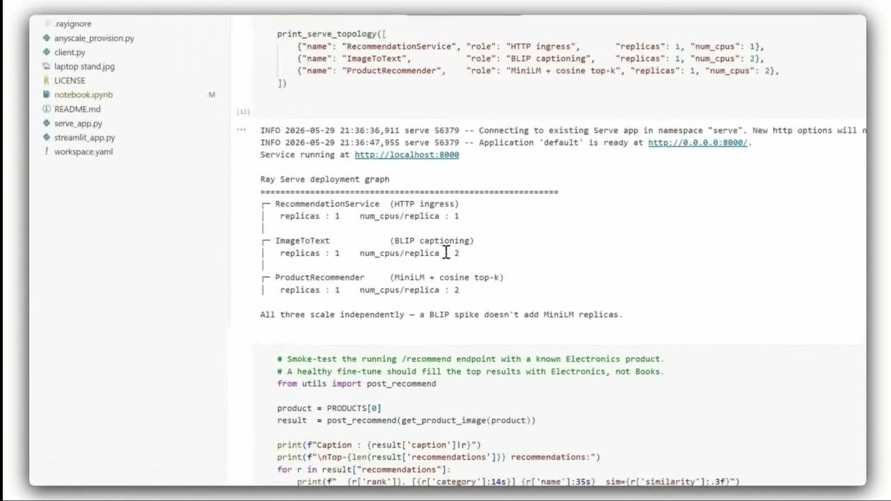
{kind=link}
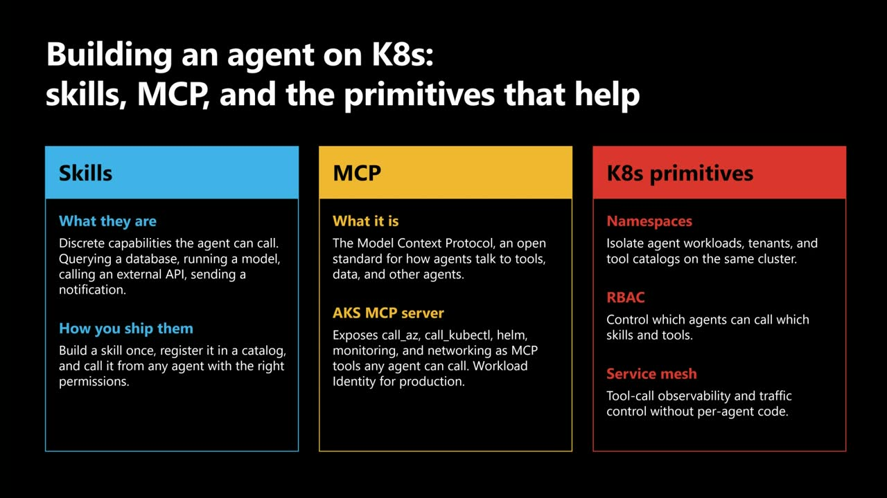
{kind=link}
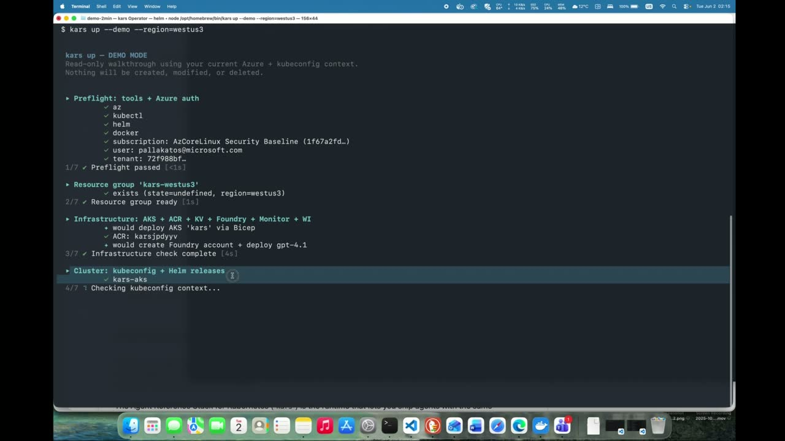
{kind=link}
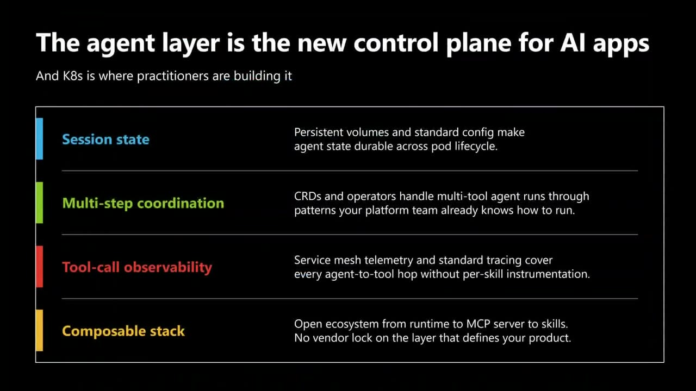
Transcript
Show / hide transcript (71,575 chars)
[00:00:01] Good afternoon, everyone. [00:00:02] How's everyone doing? [00:00:04] Come on, give me some energy. [00:00:05] It's 5:00 PM and I'm the only thing that sends [00:00:08] between you and the chain smokers tonight. [00:00:10] So trust me, buckle up. [00:00:12] Roll up your sleeves. [00:00:13] We're going to have a lot of fun together. [00:00:15] And I'm going to give you the best of my [00:00:16] energy. [00:00:16] I sound good as long as I get a return. [00:00:19] OK, so I'm Lachlan Evenson, and this is the honest [00:00:23] practitioner's take on a Gentic AI on Kubernetes. [00:00:27] Say that three times quickly. [00:00:28] Now today, I'll be your honest practitioner. [00:00:32] I have had the luxury of working in Kubernetes for [00:00:35] over 10 years. [00:00:35] Anybody else using Kubernetes in the room? [00:00:37] By a show of hands, Excellent, excellent. [00:00:40] All right, you're in the right place and it's the [00:00:43] right time because this session is for people already running [00:00:46] Kubernetes who are trying to figure out what AI workloads [00:00:49] actually need on top of Kubernetes. [00:00:51] Who's running AI on top of Kubernetes? [00:00:54] No one yet. [00:00:56] OK, trust me, you're going by the end of the [00:00:58] session, 45 minutes. [00:00:59] Come to me if you don't have something to walk [00:01:01] away with. [00:01:02] OK? [00:01:03] So what we're going to cover today is what works [00:01:06] today, what's harder than it looks and where the ecosystem [00:01:09] is going, right? [00:01:10] All on your journey to Agentic AI on top of [00:01:13] Kubernetes. [00:01:14] That sound good with me? [00:01:15] All right, let's do it. [00:01:18] OK, our agenda. [00:01:19] We have three parts for this agenda today. [00:01:21] And trust me, I had a lot of fun working [00:01:23] on this deck. [00:01:24] So if my excitement doesn't come across already, I'd be [00:01:28] surprised. [00:01:29] But I've had a lot of fun over the last [00:01:31] few months working with Agentic Systems on top of Kubernetes. [00:01:34] And I think back to 10 years ago when I [00:01:36] started in Kubernetes, I had a lot of excitement. [00:01:40] I had that aha moment when I first ran a [00:01:42] container in production, and I scaled that out to 100 [00:01:45] containers. [00:01:45] Anybody have that aha moment with Kubernetes? [00:01:48] I had that same feeling with Agentic AI systems running [00:01:51] on Kubernetes and my kids were watching Willy Wonka the [00:01:54] other day. [00:01:55] And there's this scene where Timothy Shamalay sings in a [00:01:59] world of pure imagination. [00:02:00] I feel like for the last 10 years, I've been [00:02:03] trying to build platforms and now I get to go [00:02:06] back to the world of pure imagination and create really [00:02:09] cool systems using agentic systems on top of Kubernetes. [00:02:12] So hopefully with this journey, I can impart some wisdom [00:02:15] within you all to go on your own journey. [00:02:17] And I'm going to make it very tactile. [00:02:19] We're going to see demos, customer cases, and you're going [00:02:22] to get access to some Kubernetes repos that you can [00:02:25] take away with you. [00:02:26] So let me go through the three parts of this [00:02:28] agenda. [00:02:28] We're going to go over why Kubernetes shows up as [00:02:31] a substrate for running the biggest AI workloads in production [00:02:35] and what managed stacks are great for and what self [00:02:38] managed stacks like running on top of Kubernetes with your [00:02:42] agentic system and your AI workloads are great. [00:02:45] For some teams, what it actually takes to run a [00:02:48] on Kubernetes and ask, we're going to go layer by [00:02:52] layer from inference to serving to training to agentic system. [00:02:56] So we're going to walk the stack together. [00:02:57] OK, we're going to go through the whole lot. [00:02:59] 3rd, we're going to take a look at what this [00:03:02] looks like in practice with real customers and real workloads. [00:03:05] So we're going to work you through some sovereign customers, [00:03:08] some financial service customers, how they're leveraging the platforms and [00:03:11] tools I'm talking about today to power their AI workloads. [00:03:14] And as I said, we're going to walk away. [00:03:16] You're going to have a checklist that you're going to [00:03:18] be able to take back to your team this week. [00:03:20] I always say when you go to a Taylor Swift [00:03:22] concert, what do you want? [00:03:24] You want something you can't get on TV, right? [00:03:26] I'm going to give you the stuff that you don't [00:03:28] get on TV in this audience splash zone. [00:03:30] Beware. [00:03:30] So you're going to get wet in those first 3 [00:03:32] rows. [00:03:32] OK, OK, let's go ahead. [00:03:35] Let's dive in. [00:03:36] We need to start with the why. [00:03:37] I can't tell you the what without giving you the [00:03:39] why. [00:03:39] I think the why is so important as to why [00:03:41] we're doing these things, right? [00:03:43] So let's start with the why, and then I'll get [00:03:45] to the what and the how. [00:03:46] OK, But it's important to be honest up front. [00:03:49] This is the honest practitioner. [00:03:50] I'm your honest practitioner for today. [00:03:52] Kubernetes is a big hammer, and with a big hammer, [00:03:54] everything looks like a nail. [00:03:56] Kubernetes isn't always the right fit, but in some cases [00:03:59] it is the right fit. [00:04:00] And in the case of scale AI and scale run [00:04:03] hand in hand. [00:04:04] Kubernetes is a great platform to be able to run [00:04:07] AI at scale, and it certainly is one of the [00:04:09] right answers in that, OK, so we want to actually [00:04:12] go through the why and why that scales and why [00:04:14] it matters. [00:04:17] I think it's important to start with looking at passives. [00:04:19] When you're on your journey, you start with passives. [00:04:21] On the left there we have full managed AI services. [00:04:24] The session before this was about Microsoft Foundry. [00:04:27] That is an example of a fully integrated AI platform. [00:04:32] And then over on the right, we have ASK and [00:04:34] Kubernetes, right? [00:04:35] And what we're gonna look is the left side provides [00:04:38] A managed AI platform, which is gonna be your fastest [00:04:41] path to a deployment model, right? [00:04:43] It's curated, it's standardized, it's vendor choose on the right [00:04:48] side. [00:04:48] In contrast, Kubernetes is a deeper path into the stack. [00:04:52] It's composable, it's open and it's you tuned. [00:04:55] I think the open is really powerful because if you're [00:04:58] running in multi cloud, if you're running on Prem, if [00:05:00] you're running in Sovereign, the open allows you to run [00:05:03] Kubernetes in those environments as well and have a very [00:05:06] similar experience. [00:05:07] Right? [00:05:07] But we are composable and you tuned. [00:05:10] Neither end of this scale is wrong. [00:05:12] It's a matter of where your team sits, right? [00:05:16] There are common patterns for speed and deployment. [00:05:18] You might want to be on the left side, and [00:05:20] foundry is probably your answer to take those common patterns. [00:05:23] If you want extreme scale, tunable, tight cost control, data [00:05:27] sovereignty, or building something a managed stack doesn't allow you [00:05:31] to quite tune, you might need a composable substrate and [00:05:34] ask and Kubernetes might be the right choice for you. [00:05:38] So if you're working with Kubernetes, as I saw a [00:05:40] few hands in the room, Kubernetes and ask may be [00:05:43] a great place to chat or it might be the [00:05:45] right choice for you. [00:05:46] OK, But I think it's important to see the trade-offs [00:05:49] between fully managed and integrated paths to composable substrate. [00:05:53] And I'm going to pull on that a lot throughout [00:05:55] this session. [00:05:57] All right, I love Iron Triangle, a project management. [00:06:00] You have the three things, the fast, the good and [00:06:02] the cheap, and you get to pick 2. [00:06:04] Doesn't that feel like a trade off? [00:06:06] Well, the Iron Triangle is full of trade-offs, so AI [00:06:09] kind of has its own version of this trade off [00:06:12] as well, right? [00:06:14] So AI as quality, speed and cost at each apex [00:06:18] of the triangle. [00:06:19] So let's take a look at how you can leverage [00:06:22] those different sides of the triangle with these four different [00:06:25] controls. [00:06:26] So we have granular control which allows for the quality, [00:06:29] right? [00:06:29] You get to choose your scheduler accelerators, you get to [00:06:32] choose the isolation model for whatever your customers need. [00:06:37] Open tooling. [00:06:38] I think it's super important the open tooling ecosystem and [00:06:42] the fact that Kubernetes and ask leverage, the open ecosystem [00:06:46] gives you value of the whole AI open source stack [00:06:49] without vendor lock in. [00:06:50] As I said, you can run this on Prem, you [00:06:52] can run this in other data centers, you can run [00:06:55] it in other clouds and have a very similar experience [00:06:57] and that may be important to you. [00:06:59] Data sovereignty. [00:07:00] I think this is a big critical time talked about [00:07:02] a lot with our customers. [00:07:04] Workloads, data and weights stay where the compliance demands. [00:07:10] You don't have to send them off premises. [00:07:12] You can keep them where you're comfortable within your security [00:07:16] boundaries and confines and visible unit economics. [00:07:19] The talk of the town is cost per token, right? [00:07:22] We all worry about cost per token. [00:07:24] With the self hosted platform, you can actually tune your [00:07:27] cost per token, cost per inference, cost per tenant, and [00:07:30] it's all tunable. [00:07:31] So you have control over the cost. [00:07:33] The data stays with you, You're relying on open tooling [00:07:36] and you have granular control. [00:07:38] The trade off of all this, and there's always a [00:07:41] trade off at the bottom you can see is complexity. [00:07:44] So you're buying flexibility with operational overhead. [00:07:49] So this platform will give you ultimate flexibility, but you [00:07:52] need to operate it. [00:07:53] And don't worry, AI agentic systems can help with that [00:07:55] too. [00:07:56] We'll talk about that a little later. [00:07:59] OK, so if this is you, the composability isn't optional, [00:08:03] it's required, right? [00:08:04] So here are the profiles we see on the left [00:08:07] in blue of where self managing wins and where we [00:08:10] see our customers selecting self managing teams. [00:08:13] Running AI at scale with cost or sensitivity to where [00:08:17] the data is sitting. [00:08:19] Isvs and cloud agnostic vendors who are out there building [00:08:23] and shipping AI platforms to on Prem and edge and [00:08:26] platform owners who want composability rather than rent. [00:08:31] And then finally, if we look on the right, here [00:08:33] are the primitives doing the work. [00:08:34] So the great thing about Kubernetes is it comes with [00:08:36] all of these things out-of-the-box to manage the substrate. [00:08:39] We have declarative resource management where we can manage memory, [00:08:44] GP, US quotas defined as code. [00:08:46] Everything's declarative. [00:08:48] We have heterogeneous scheduling. [00:08:50] In a world of a lot of different accelerators, you [00:08:52] want to match the right workload to the right accelerator [00:08:55] at the right time. [00:08:56] So we can compose heterogeneous clusters with different types of [00:08:59] accelerators, networking accelerators too. [00:09:02] We have namespace isolation where we can have multi tenant [00:09:05] AI not crossing that security boundary within Kubernetes or having [00:09:09] to rewrite your security tools. [00:09:11] And then finally, there's a complete ecosystem full of primitives [00:09:15] built with this. [00:09:15] I see Mark in the back. [00:09:16] Dapper, right, lives on top of he gave me a [00:09:19] wave. [00:09:19] He's he works on a project called Dapper, which sits [00:09:22] on top of Kubernetes. [00:09:24] But these abstractions are durable and something that these other [00:09:27] platforms can build on top of to be able to [00:09:30] have great experiences. [00:09:31] So you can build your own platform. [00:09:33] So Kubernetes obviously handles the complexity. [00:09:35] It's built for that complexity, but not in spite of [00:09:38] it. [00:09:40] So far, so good. [00:09:41] I'm going to go grab some water, but as I [00:09:44] just framed this up so you can take a look, [00:09:46] AI comes in three different, very distinct workloads. [00:09:49] On the left, in red, we have inference, in the [00:09:52] middle we have training, and on the right we have [00:09:55] agentic systems. [00:09:57] The purpose of this slide is actually to identify that [00:10:00] each workload has different conditions, different lifetimes, different compute. [00:10:04] So there is an operational environment that's required for each [00:10:07] of these different workloads. [00:10:11] So let's take a look at them quickly, but take [00:10:13] a look at inference. [00:10:14] Started inference on the left here. [00:10:15] So lifetime milliseconds to seconds per request. [00:10:18] We have both GPU and CPU in the mix, so [00:10:21] heterogeneous, often single node. [00:10:23] You can run inference on a single node. [00:10:25] When we talk about training, that's not often true. [00:10:28] And the failure mode is just drop the request and [00:10:30] the cost vector here is what you need to optimize [00:10:33] on is latency and cost per token. [00:10:35] And down the bottom, what we're going to get to [00:10:36] is different open source tools and platforms. [00:10:38] So we have Kaito and AI Runway there as places [00:10:41] that you can leverage inference on top of Kubernetes and [00:10:44] ask training is throughput bound, right? [00:10:47] Hours, weeks. [00:10:49] Data scientists get really mad when their training jobs break [00:10:51] because they have to resume from a checkpoint. [00:10:53] And when you're utilizing extremely expensive hardware, time is money. [00:10:57] And every minute on those computer platforms is money. [00:11:00] So you want to make sure they're absolutely saturated and [00:11:03] absolutely utilized to the full extent. [00:11:06] And you want throughput iteration time. [00:11:08] How long does a training iteration take? [00:11:09] That's the measure we're going to discuss Ray and any [00:11:12] scale on Azure as solutions to help you with the [00:11:14] training, which is throughput bound. [00:11:16] And then finally, we're going to talk about some agentic [00:11:19] systems, but sessions, minutes per turn, right? [00:11:21] We have autonomous agents, autopilot agents running on our behalf, [00:11:24] ingesting data, making decisions and helping us get through our [00:11:28] day. [00:11:29] They're multi, multi modal. [00:11:30] They take input from images, text, voice, video streams. [00:11:35] They resume on state and mid session. [00:11:36] So we need some kind of state awareness and tool [00:11:39] core latency is obviously very sensitive. [00:11:41] What tools they need to call to ultimately get you [00:11:43] the response that you need. [00:11:45] And down the bottom we're going to talk about skills [00:11:48] MCP and a platform called Openclaw, which I heard has [00:11:50] been talked about a lot today. [00:11:52] So they all share GP GPU's, but these three discrete [00:11:56] workloads, AI do not share the same operational assumptions with [00:12:02] me so far. [00:12:04] OK, I'm talking quick. [00:12:05] I'm talking quick, but hopefully bring it along. [00:12:07] OK, excellent. [00:12:08] Thank you. [00:12:08] Thanks for the nods in agreement. [00:12:10] OK, So Kubernetes gives you the foundation, but AI, the [00:12:14] error of AI asks for more on top. [00:12:17] So Kubernetes is necessary, but it's not sufficient at the [00:12:20] moment. [00:12:21] You need more on top of Kubernetes and you need [00:12:24] to be able to build a platform that enables AI [00:12:26] workloads on top of Kubernetes. [00:12:28] So there are some gaps that Kubernetes needs to close, [00:12:31] right? [00:12:31] And these gaps are being worked on. [00:12:33] But for example, we took at the lock the top [00:12:35] left. [00:12:36] Traditionally Kubernetes has workloads that can be scheduled one pot [00:12:40] at a time. [00:12:41] AI workloads want hundreds of thousands, 10s of thousands of [00:12:44] pods to start together, right? [00:12:46] So you need to use things like gang scheduling and [00:12:49] advanced queuing. [00:12:50] You don't want to use the default scheduler. [00:12:52] Kubernetes allows you to clip that in heterogeneous hardware and [00:12:56] awareness. [00:12:57] Every new generation of accelerator that comes out doesn't mean [00:13:01] you overchange your whole platform. [00:13:03] It just means you can utilize a new platform while [00:13:05] utilizing the one that you've already known and trusted. [00:13:08] So you have access to different GPU's, different CPU's, AI [00:13:12] aware devices, GPU family awareness, accelerator, top topology, numeral aware [00:13:17] placement are all need to become first class signals on [00:13:21] the Kubernetes platform. [00:13:24] Scaling. [00:13:25] So we have scaling is on the right signal. [00:13:28] So traditionally Kubernetes scaled only on CPU and memory. [00:13:31] Obviously in the AI world that is not enough. [00:13:34] We need to scale on things like tokens per second, [00:13:37] queue depth, GPU utilization and actually release the accelerators when [00:13:42] idle. [00:13:43] And finally we durable state. [00:13:45] So in the agentic world, obviously we need state and [00:13:47] also the training world. [00:13:49] So Kubernetes was designed for stateless services. [00:13:52] So we have to build in AI a set of [00:13:55] caching and a set of storage services for long running [00:13:59] training jobs for agentic workloads to survive evictions, drains, topology [00:14:04] changes, or even spot interruption if you're running on spot [00:14:09] devices. [00:14:09] So Kubernetes gives you the foundation. [00:14:12] But what we're going to build on upon here is [00:14:14] the rest of the session is what we layer on [00:14:16] top of Kubernetes. [00:14:19] OK, so I gave you the why, now we're going [00:14:21] to get the what in the how. [00:14:22] OK, so let's get concrete here. [00:14:25] We're going to walk through a four layer stack and [00:14:27] go through each layer of the stack. [00:14:28] Each has its own tools that I'm going to suggest [00:14:31] trade-offs. [00:14:32] And we actually have some announcements, so excited to get [00:14:34] through them as well. [00:14:37] OK, so this is the mental model for the rest [00:14:39] of this session going from the bottom up Kubernetes up [00:14:42] the bottom. [00:14:43] We have Kubernetes where we have the substrate with Kubernetes [00:14:47] and ask Azure Kubernetes Service. [00:14:49] On top of that, we're going to go through inference [00:14:51] and serving, which I find most customers start with. [00:14:54] It's the way to get some value out of AI [00:14:56] or at least see what AI can provide for you. [00:14:58] So we're going to look at inference and serving with [00:15:01] Kaito and AI Runway. [00:15:02] Then we're going to move up the stack into the [00:15:04] green training and fine tuning with Ray and any scale [00:15:07] on Azure. [00:15:08] The demo there is really cool. [00:15:09] So I'm excited to show you some really cool training [00:15:12] and fine tuning that we can do very quickly. [00:15:14] And at the top of the stack, the area I'm [00:15:16] having a lot of fun with at the moment is [00:15:18] the agentic orchestration. [00:15:19] So we're going to look at skills, MCP and open [00:15:21] floor and some things we can build together. [00:15:24] So we're going to start with inference and then I'm [00:15:26] going to go to the top of the stack and [00:15:28] then finish with the substrate at the bottom at the [00:15:30] end. [00:15:31] OK, so, so let's take a look at inference and [00:15:34] serving layer. [00:15:35] And as I said, I want to start here because [00:15:37] if you haven't started your journey, some folks who run [00:15:39] in Kubernetes but not AI on Kubernetes, right? [00:15:42] So I think this is the logical starting point. [00:15:44] And I'll tell you why that is because you have [00:15:46] a model you want to run up and you want [00:15:48] to run it up in production, you want to run [00:15:50] it up in dev. [00:15:51] You want to get started and see the value AI [00:15:53] can provide and have you develop a start to integrate [00:15:55] that model into a workload. [00:15:57] So let's talk about what that looks like on Kubernetes. [00:16:01] All right, So what we're going to talk about here [00:16:04] is two different open source tools. [00:16:06] So you can pick them up. [00:16:07] They're all on GitHub today. [00:16:08] Don't worry, I'll get you the links with one goal. [00:16:11] So the goal here is to get a model, an [00:16:14] inference model serving reliably. [00:16:17] So you get an endpoint that you can make an [00:16:19] inference request too, right? [00:16:21] So let's start on the left in the blue. [00:16:23] We have the platform layer with AI Runway. [00:16:25] What AI Runway provides is a Kubernetes native inference platform [00:16:31] with a web UI and a unified model deployment controller. [00:16:35] So what this actually means to you is you can [00:16:38] get a model up and running on Kubernetes very quickly, [00:16:41] quickly with just a few clicks of a button. [00:16:43] And I will show you in a demo in a [00:16:45] couple of slides later. [00:16:47] And it supports all the major engines out there like [00:16:51] VLLM, SG, Lang, Tensor, RT, Llama, CPP. [00:16:55] So you can plug your own serving engine in. [00:16:57] There are many different serving engines with different trade-offs. [00:17:00] This allows you the flexibility, but it has one click [00:17:02] deploy with a nice UI where you can run this [00:17:05] up this afternoon on any cluster and get started. [00:17:08] And then over on the right, we're going to look [00:17:10] at the Kubernetes AI tool, excuse me, tool chain operator [00:17:14] for Kaido for short. [00:17:15] It's the operation layer. [00:17:16] So this takes care of all the operational burden that [00:17:19] you need to run a model and server model in [00:17:21] production. [00:17:22] It has optimized presets for pipelines data and tensile tensor [00:17:26] parallelism, and it has KV cache, key value cache aware [00:17:30] routing using Kubernetes primitives like inference pool. [00:17:35] The important relationship here is that the AI runway is [00:17:38] the platform, and Kaido is one of its providers, alongside [00:17:42] things like NVIDIA Dynamo, Kube, Ray, and LLMD. [00:17:46] And the great thing about this, these are all open [00:17:48] source. [00:17:49] They're both Kubernetes native, which means you can run them [00:17:52] on any platform. [00:17:52] You can pick them up and run them on any [00:17:54] Kubernetes cluster that's compliant today, and you can run them [00:17:57] anywhere. [00:17:59] All right, so I'm going to walk you through kind [00:18:02] of the experience that you're going to see on the [00:18:04] next slide where I go through the demo. [00:18:06] This is what you're going to go from. [00:18:07] So the promise here is from browsing a model to [00:18:10] serving in production in just a few clicks, right? [00:18:13] And primitives you already operate. [00:18:14] So if you're running Kubernetes today and you have your [00:18:17] workloads, all your app workloads already running on there, you're [00:18:20] using the same tooling. [00:18:21] So we're going to browse and deploy. [00:18:23] We're going for step one. [00:18:24] We're going to browse, we're going to go to AI [00:18:26] Runway. [00:18:26] We're going to pick a model from the model catalog [00:18:28] which integrates into the Hugging Face UI, where you can [00:18:31] go to of the latest models, open source open weight [00:18:34] models as well. [00:18:35] You're going to check the GPU fit. [00:18:36] So it's actually going to say this will fit on [00:18:39] your cluster or it'll trigger some auto scaling on your [00:18:41] cluster to make it fit and then create a model [00:18:43] deployment. [00:18:45] Step 2, we're going to actually create a Kaido workspace [00:18:48] which estimates the GPU utilization that's required, the auto scaling, [00:18:52] so the nodes that you need and estimates where you'll [00:18:56] actually run this workload and takes care of all of [00:18:59] that with optimized presets. [00:19:01] And boom, it spins up an endpoint which is live. [00:19:03] And then finally, you just ship that off and Kubernetes [00:19:06] does the rest from CADA, which offers auto scaling. [00:19:09] We integrate with the LLM metrics so you can scale [00:19:12] on all different metrics. [00:19:13] We have Canary deployments for rollback. [00:19:16] We have rollback aware deployments as well. [00:19:18] So every piece on the right side of this slide [00:19:20] is a Kubernetes primitive that you already know how to [00:19:23] run and operate. [00:19:24] We're not giving you anything new, we're just shaping it [00:19:26] for AI. [00:19:27] So we have all the primitives down to play on [00:19:30] the bottom and I believe the next slide is demo. [00:19:33] OK, so I got to give you the setup and [00:19:35] the quick drum roll. [00:19:37] This was filmed by a colleague of mine named Ralph. [00:19:39] I like to talk over demos, but Ralph has a [00:19:42] voice for radio. [00:19:42] It's smooth and buttery, so you should enjoy it. [00:19:45] Let's see. [00:19:46] And Ralph's going to take us through AI runway. [00:19:48] Enjoy. [00:19:48] Let's look at the user experience of AI Runway. [00:19:50] This is the model catalog, the first thing your data [00:19:53] scientists and developers see. [00:19:55] Think of it as your App Store for AI models. [00:19:57] We have a curated set of popular models, Quan Phi, [00:20:00] Deep Sea Llama, each with a quick summary how big [00:20:04] it is, what engines it supports and what it's good [00:20:07] at. [00:20:07] Chat, text generation, multimodal, and so on. [00:20:11] But the real magic is this GPU fit indicator on [00:20:14] every card. [00:20:15] It tells you instantly whether a model will actually run [00:20:18] on your cluster. [00:20:19] No guesswork, no trial and error. [00:20:22] Before we deploy something, let's also take a quick look [00:20:24] at the runtime tab, where you see the inference frameworks [00:20:27] that run your models. [00:20:28] Under the hood, AI Runway supports multiple runtimes, and it's [00:20:31] entirely extensible, so you can choose a different runtime when [00:20:35] you want. [00:20:35] You're never locked in. [00:20:37] Let's go to the Hugging Face gallery and search for [00:20:42] DeepSeek R1671 billion parameters. [00:20:45] This is not going to fit on our single node [00:20:49] which has 8H1 hundreds. [00:20:51] So I then go into deploy and I select Dynamo [00:20:55] as the runtime. [00:20:57] We'll deploy into the default namespace and continue down the [00:21:01] options. [00:21:05] As you can see here, because this model is so [00:21:08] large and one node was insufficient, it is recommending 3 [00:21:11] nodes that will have 24 GPUs in total. [00:21:15] And because the auto scaler is enabled on this cluster, [00:21:18] when we deploy we will eventually receive the extra nodes [00:21:21] that we need. [00:21:23] Now here's where storage volumes come in. [00:21:26] I'm attaching A persistent volume backed by Azure managed luster. [00:21:31] This is a high performance shared file system. [00:21:35] The model waits get cached here, so on restarts or [00:21:39] scale out the new nodes don't have to re download [00:21:42] hundreds of gigabytes. [00:21:44] It's read write many so all nodes can access it [00:21:48] simultaneously. [00:21:55] You can also see the cost estimate updating in real [00:21:58] time. [00:21:58] We have a good idea exactly what this deployment costs [00:22:02] per hour and per month on Azure. [00:22:05] This value will of course depend upon your cloud provider. [00:22:09] So here's where it gets interesting. [00:22:10] Right now, our cluster only has a single H-100 node, [00:22:15] 8 GPUs, but DeepSeek-R1 needs 24 GPUs across 3 nodes. [00:22:20] So what happens when I hit deploy? [00:22:23] We'll skip ahead here since auto scaling takes a few [00:22:26] minutes, but once those nodes come online, the deployment rolls [00:22:30] out across all three nodes and goes to running. [00:22:33] Now that DeepSeek-R1 is running, let's use it in the [00:22:36] deployment page. [00:22:37] We can see our storage and the mounted disk, and [00:22:40] you can see the gateway endpoint. [00:22:43] AI Runway integrates with the Gateway API inference extension using [00:22:47] Istio in this case. [00:22:49] This gives us a single stable endpoint for all our [00:22:52] models. [00:22:53] There's also our ready to use curl command. [00:22:56] It's a standard Open AI compatible API. [00:22:59] Any tool or SDK that speaks Open AI can talk [00:23:02] to your models without modification. [00:23:08] Excellent. [00:23:09] Do you do you agree? [00:23:10] I think Ralph has a career in audiobooks. [00:23:12] I can definitely listen to his voice. [00:23:14] Smooth and buttery, right? [00:23:15] So that is the power of AI runway. [00:23:18] Ralph went through that in 3 minutes. [00:23:19] What used to take me 3 weeks to get up [00:23:21] and running. [00:23:22] So the fact that you can click through, get everything [00:23:24] provisioned using an open source tool that's available on GitHub [00:23:27] today is absolutely powerful. [00:23:30] OK, we're going to move up the stack now we're [00:23:31] going to go to training and fine training. [00:23:33] You've got your model, you've got it up and running. [00:23:35] Now you want to fine tune it with your own [00:23:37] data for your own workload. [00:23:38] OK, let's have a look at Ray and any scale [00:23:42] on Azure. [00:23:45] OK, so now we want to talk about what Ray [00:23:48] actually gives you and what it powers. [00:23:50] So eventually all the agents need you to have a [00:23:53] fine-tuned model with your own data behind it. [00:23:56] So Ray is the workload that actually powers that. [00:24:00] So Ask on its own provides the pod scheduling, the [00:24:02] auto scaling, the node life cycle, networking, storage. [00:24:05] It provides the substrate. [00:24:07] As I mentioned, it's hardened for production at scale, but [00:24:11] production AI also needs things Ask doesn't provide natively. [00:24:15] So we need a distributed compute and scheduling framework that [00:24:19] schedules both the CPUs and GPUs in a single job. [00:24:22] We also have heterogeneous hardware. [00:24:24] Ray takes care of that with fractional GPU allocation, which [00:24:28] is actually really important if you want to keep those [00:24:31] GPU's at 100% as long as possible. [00:24:33] Multi node orchestration for both training and reinforcement learning. [00:24:38] So this becomes a CICD pipeline for your models, reinforcement [00:24:42] learning, auto scaling. [00:24:44] So it takes care of auto scaling on your behalf. [00:24:46] And the really cool thing that I'm going to show [00:24:49] in the demo is it's one Python native API across [00:24:52] data prep, training, tuning and serving. [00:24:54] And that's really cool. [00:24:55] It's all hosted in their interface and you can deploy [00:24:58] from their interface and actually run it on an ask [00:25:01] cluster. [00:25:01] So that's the gap that Ray fills. [00:25:03] Ask is the cluster, Ray is the workload, and we're [00:25:06] going to take take a look at how Ray can [00:25:07] help us with training and fine tuning. [00:25:11] So today I'm announcing the public preview of Any Scale [00:25:14] on Ray. [00:25:14] So this is managed Ray, which is an Azure native [00:25:17] integration in collaboration with the folks from Any Scale. [00:25:21] So it's in public preview. [00:25:23] The Any Scale runtime runs inside your ASK environment and [00:25:26] is integrated into your Azure control plane. [00:25:29] It's open source. [00:25:30] Ray is the distributed compute engine. [00:25:32] Any Scale provides A managed life cycle, observability and 24 [00:25:37] by 7 support. [00:25:38] It runs in your subscription. [00:25:40] This is super critical and I'll talk about how it's [00:25:42] actually configured in your subscription build through your Azure room [00:25:45] agreement, which is really cool because you don't need to [00:25:48] go form a new vendor relationship. [00:25:49] You just pay us and we make sure we work [00:25:51] with any scale as well. [00:25:53] So this is how that looks, how it's delivered, because [00:25:55] I think it's important to separate how it actually runs [00:25:57] on your architecture when you're worried about sovereignty and when [00:26:00] your daughter is. [00:26:01] So there's two boundaries that matter in this architecture. [00:26:03] We have them boxed, one in the orange at the [00:26:05] top and the blue at the bottom. [00:26:07] So the any scale control plane is along the top. [00:26:09] It runs in the any scale managed Azure tenant, which [00:26:13] includes dev tools, observability, AP is controllers, job orchestration, monitoring [00:26:18] and many more things. [00:26:19] And in your subscription, which is the bottom, that's where [00:26:22] your daughter and model lives. [00:26:23] So this is great. [00:26:24] You don't have to send them anywhere else. [00:26:26] The any scale runtime runs a managed ray operator on [00:26:29] your ask cluster with your BLOB storage and your GPU [00:26:33] and CPU nodes. [00:26:35] So the connection between them, everything stays within your tenant [00:26:39] and your realm. [00:26:40] So the three pillars worth calling out, which we have [00:26:42] along the bottom there provisioning from the Azure portal, one [00:26:45] portal, you don't have to go to multiple portals. [00:26:47] Same workflow for your team that you already know and [00:26:50] love unified billing, which I mentioned. [00:26:52] And the the very best part of it is enterprise [00:26:55] security with Entre ID because not only do you get [00:26:58] workload identity, you get identity with your own credentials, RBAC [00:27:01] audit and all the trails and compliance trails that you [00:27:05] already know and love. [00:27:06] So your data and your model never leaves the environment [00:27:09] here. [00:27:09] So next demo is coming out right now. [00:27:12] I'm actually going to speak over it, but I do [00:27:14] have my colleague in the front, Bob, who helped me [00:27:16] with this demo. [00:27:16] So you get to free. [00:27:17] Feel free to critique me. [00:27:18] I'm going to move to the side as I talk [00:27:20] over this. [00:27:21] We're going to start in the Azure portal and I'm [00:27:24] going to show you the full thing and we're going [00:27:26] to go through a complete training and fine tuning exercise [00:27:29] with a product catalog search. [00:27:30] Buckle up, it's a 7 minute demo and it's going [00:27:32] to be pretty quick. [00:27:34] So we start, as I mentioned, it's all integrated in [00:27:36] the Azure portal. [00:27:37] We're in the Azure portal here. [00:27:38] We don't have to go anywhere else. [00:27:40] And from the Azure portal, we can go to the [00:27:42] search bar in the top of the middle and go [00:27:44] ahead and type any scale. [00:27:45] Any scale will appeal appear. [00:27:47] It's in preview here, so it should show up. [00:27:49] Any scale cloud. [00:27:51] You can click any scale cloud. [00:27:53] The list of any scale clouds will come up. [00:27:55] Of course, we're going to create a new one here. [00:27:56] So let's go ahead and go through the create flow. [00:27:59] The create flow is going to be very familiar to [00:28:02] folks familiar with Azure. [00:28:04] So what subscription would would you like it in? [00:28:06] And we're putting it in that type subscription. [00:28:09] What resource group? [00:28:10] You can either create a new one. [00:28:11] We're going to use Bob's testing for our resource group. [00:28:15] And where are we going to put it? [00:28:17] We're going to go put it in South, South Central [00:28:19] US. [00:28:20] We give it a cloud name. [00:28:21] This is to identify the cloud that we're talking with [00:28:24] and the connection with the any scale control plane. [00:28:26] And then we can provision either a new cluster or [00:28:29] a cluster that we already have. [00:28:30] So if you already have Kubernetes clusters up and running [00:28:33] on ask, you can go ahead and and link them [00:28:35] in there. [00:28:36] This is the cool part as well. [00:28:38] We have managed identity. [00:28:40] So this is how all the workloads running on the [00:28:42] Any Scale cloud identify themselves with Azure and the storage [00:28:46] accounts which model checkpoints and weights are stored. [00:28:49] And finally, we're going to be using ACR to store [00:28:52] any container images which support the ray operator, Any scale [00:28:56] operator. [00:28:58] OK, finally, we're going to run our checks and balances, [00:29:00] run it through the template before we submit. [00:29:02] So let's just take a little look to recap before [00:29:05] we go ahead and click create here. [00:29:07] So all the details there are verifiable that we set [00:29:10] it up with the resource groups in the test subscription. [00:29:13] And what we can do then is go ahead and [00:29:14] click create. [00:29:15] We'll click create and we'll wait for the, you know, [00:29:17] the elevator music to start while I grab a drink. [00:29:20] And hopefully with the magic of video editing, this thing [00:29:22] will create pretty quickly. [00:29:25] We can see up there in the notification window that [00:29:27] the submission is already taking place. [00:29:29] And this thing should come up and running in just [00:29:31] a matter of a few seconds. [00:29:32] So I've gone from no any scale to an any [00:29:35] scale on Azure cluster up and running in a matter [00:29:38] of a few clicks. [00:29:39] This is extremely powerful and I haven't have to leave [00:29:42] the Azure portal at all to make any of this [00:29:45] happen. [00:29:46] So we can see the deployment is initializing up there [00:29:48] on the right. [00:29:49] And now that that deployment's running, we should have a [00:29:52] cloud instance up and we can navigate to Bob's test, [00:29:55] which we created, which was the name of the cloud. [00:29:58] So here we see our resources, we see our resource [00:30:01] blades on the left, familiar for anybody who's used the [00:30:05] Azure portal. [00:30:06] Nothing new here. [00:30:07] But this is the instance of how it's created within [00:30:09] the Azure APIs. [00:30:10] We can click launch. [00:30:12] This launches the any scale UI. [00:30:15] The really cool thing here is you can continue with [00:30:17] the same credentials that you log into the Azure portal. [00:30:20] So we're going to demonstrate how that works. [00:30:23] This is really powerful. [00:30:24] One identity, multiple platforms, all tied in using the experience [00:30:28] that starts in the portal. [00:30:30] So we've gone ahead and authenticated now we've launched the [00:30:33] portal here, and what we're going to do is walk [00:30:35] through just a few things. [00:30:36] This is where it's going to get quick, but we're [00:30:38] going to get into it. [00:30:39] We see some dashboards, workloads, Jupiter notebooks or workspaces where, [00:30:44] sorry, workspaces are Jupiter notebooks where your AI developers or [00:30:48] your data scientists work. [00:30:49] We have jobs and services. [00:30:51] Jobs are short, short run jobs that run the completion [00:30:54] and services are how you present these to connect to [00:30:57] for inferencing. [00:30:58] So we're going to go into workspaces. [00:31:00] The really cool thing is you can go from zero [00:31:03] to a full running pipeline here in just a minute [00:31:06] using templates. [00:31:07] So there is a bunch of baked in templates to [00:31:10] do anything from multimodal inferencing to LLMS to hero demos. [00:31:15] But anything that you can think of, there is a [00:31:17] template library, that template library that any scale provides and [00:31:21] you can get access to up, up and running models [00:31:23] and infrastructure and just a matter of clicks. [00:31:26] So now we're going to look at one that we [00:31:28] provisioned and and we're going to walk through that over [00:31:31] here on the right of the screen, you can see [00:31:33] that it's picked up that I have a cluster of [00:31:35] CPUs only I have a head node over here. [00:31:37] And we can see that it's actually running on top [00:31:39] of a Kubernetes cluster that I've already provisioned, which is [00:31:42] what the way I set it up an 8 node [00:31:43] cluster. [00:31:45] And what we're going to do is show you something [00:31:47] really powerful. [00:31:47] So your AI developers or your data scientists can just [00:31:51] launch the notebook from directly within the portal and start [00:31:55] executing code. [00:31:56] So here what we have is an embedded Visual Studio, [00:31:59] Visual Studio instance, Visual Studio Code instance, and we can [00:32:03] start looking at the code. [00:32:04] So what we're going to do here is actually run [00:32:07] through a fine tuning demo where we have a product [00:32:09] catalog of images and we're actually going to fine tune [00:32:12] that embedded model that we run today with a set [00:32:15] of. [00:32:15] New. [00:32:16] Images that we want it to make better recommendations. [00:32:19] So if I type in shoe, it's going to recommend [00:32:21] sock. [00:32:22] If I search for headphones, it's going to give me [00:32:24] things like speakers and other things that are related. [00:32:27] So what you see here is all the Python code [00:32:30] from within the notebook that can be run and executed [00:32:33] directly. [00:32:33] You don't have to leave this interface. [00:32:35] You can simply click that play button there on the [00:32:38] right and execute these bits and pieces. [00:32:40] And what we're doing is actually cleaning the data right [00:32:43] now and running a fine tune so you can see [00:32:46] that little circle whizzing around there on the bottom. [00:32:49] What it's actually telling us right now is I've run [00:32:52] some fine tuning and the models gone from .34 accuracy [00:32:56] to .2 because I've given it new data to train [00:32:59] that model and make it more specific to my work [00:33:02] use case. [00:33:03] And this is going to graph those results for me [00:33:05] so that I can say I've actually made the model [00:33:07] more accurate through the fine tuning, which means I'm going [00:33:10] to get better recommendations. [00:33:11] I know this is going quickly. [00:33:13] I'm trying to follow along here to keep you all [00:33:15] up to date. [00:33:16] And finally, we can actually look in the embedded vectors [00:33:18] here for relationships. [00:33:20] Everything in the green there are related items, so we [00:33:23] have laptop stands, smartwatches, portable SSDs, webcams, the the fine [00:33:27] tuning has actually created those relationships and finally, we can [00:33:31] see here these clouds on the left. [00:33:33] You see that the colors are all over the place [00:33:35] and on the right they're aggregated, meaning that we've put [00:33:38] all the references that are close together and made at [00:33:41] the model more accurate with the data we've provided. [00:33:44] Now finally, we're going to want to serve this somewhere. [00:33:47] And the great thing about any scale on Azure is [00:33:50] it takes care of the routing. [00:33:52] We have 3 endpoints here, one for our Http://ingress and [00:33:55] there's two models, one that does image to text and [00:33:58] the other one does the recommendations that we just fine-tuned. [00:34:02] So around this movement here, we're actually showing that if [00:34:05] I ask it about a pair of wireless headphones, it's [00:34:08] going to give me some different references and the matches [00:34:11] or the applicability of those references to those other items. [00:34:15] So what we've done here is go from notebook to [00:34:17] production with just a few clicks. [00:34:19] Finally, I'm going to just show the integrated monitoring and [00:34:21] observability stack, which is super powerful. [00:34:24] So you can see all the utilization of the nodes [00:34:26] in the clusters. [00:34:27] You can actually have access to what's running and dependencies, [00:34:30] which is something that only the any scale platform Running [00:34:33] Ray gives you under the hood. [00:34:35] So you can not only see what's running, but you [00:34:38] can also troubleshoot and make sure your platform is being [00:34:41] utilized to the extent that you want it. [00:34:43] So super powerful platform and in only 7 minutes that [00:34:46] took me 3 months to do, only three months to [00:34:49] go, you know, months to go. [00:34:50] So it's great to see this in action and I [00:34:52] really think you'll all love it for your fine training [00:34:55] and reinforcement learning. [00:34:56] So check out any scale on Azure with Ray under [00:34:59] the hood running on ask. [00:35:00] And thank you, Bob, for that demo. [00:35:03] All right, we're getting into the late stages here. [00:35:05] We're going to finish on agentic, talk about some customers, [00:35:07] and I'm going to get you out of here. [00:35:09] OK, So wrapping up, this is the area that I'm [00:35:12] really excited about. [00:35:13] So we've looked at inferencing, serving, and we've looked at [00:35:16] training. [00:35:17] Last question is, how do I serve that all up [00:35:19] to my autonomous agents? [00:35:20] Aren't we talking about agents here? [00:35:22] So I'm going to show you how to do that. [00:35:24] So this is where agentic orchestration comes in. [00:35:26] And this area, I will say, is arguably the least [00:35:29] mature part of the stack. [00:35:31] It's changing very rapidly. [00:35:33] You hear open floor Hermes today, but I don't know [00:35:35] where it's going. [00:35:37] But the cool thing is you can run it up [00:35:38] and start to experiment with it. [00:35:41] So what we're going to do is just take a [00:35:43] look at building an agent on Kubernetes with skills, MCP [00:35:45] and primitives that help. [00:35:47] So if you never heard the terminology of a skill, [00:35:49] it's basically just a discrete set of capabilities that an [00:35:53] agent can run. [00:35:53] The cool thing about skills is it's any kind of [00:35:56] script that any of your platform team would run. [00:35:59] Everything that I had checked into a repo has now [00:36:01] become a skill and I have agents run it on [00:36:03] my behalf. [00:36:04] So think about that. [00:36:05] Hold that in your mind for day 2 operations. [00:36:07] You register that in the catalog and you can call [00:36:09] it from any agent that has the right permissions to [00:36:12] call it. [00:36:12] MCP is a protocol that allows all models, all agents [00:36:16] to talk with tools and data and other agents. [00:36:20] So it allows the connectivity there. [00:36:22] And one really cool thing is we actually expose the [00:36:25] AKS MCP server today. [00:36:27] So if you want to run up a set of [00:36:29] tools and interact with AKS and natural language, you can [00:36:32] say provision me an AKS cluster in VS Code with [00:36:35] the AKS MCP server and the LLM will make the [00:36:38] call for you and actually provision the infrastructure that's all [00:36:42] open source today. [00:36:43] It'll run all your tools under the hood and we [00:36:46] run with workload identity for protection. [00:36:49] Then on the right, we have Kubernetes fill in the [00:36:51] primitives that where we have gaps. [00:36:52] So we're using namespaces to isolate the agents back to [00:36:56] make sure it has the right privileges and service measures [00:36:59] to make sure that we can observe and filter the [00:37:02] calls and actually make policy changes that we need. [00:37:05] So Kubernetes has all the primitives we need under the [00:37:08] hood here to make this work. [00:37:11] OK, so this is where we're right out on the [00:37:13] the edge of the frontier here. [00:37:15] I'm going to give you an example of how to [00:37:17] do this. [00:37:17] So talked about open claw earlier today in many of [00:37:20] these sessions, but it's a reference implementation for a multi [00:37:24] channel, multi tool personal AI assistant. [00:37:26] I use it to book my Pilates lessons. [00:37:29] Hold your applause for later. [00:37:30] There's no way I'm doing Pilates, not because there's anything [00:37:33] bad, I just don't know that my body will do [00:37:35] it. [00:37:36] It bridges a chat platform into a multi agent orchestrator. [00:37:40] So we're going to show a really cool demo on [00:37:42] how to do that with approval flows, tools and memory. [00:37:45] It takes care of everything. [00:37:46] It's a base pattern and we have a use case [00:37:48] that I'm going to show in a minute. [00:37:50] We've actually codified a bunch of skills that our ASK [00:37:53] engineers use to help with troubleshooting environmental issues with ASK. [00:37:58] So think about it as we can create agents out [00:38:01] of our support engineers and actually give them access to [00:38:03] the right tools at the right time so they don't [00:38:06] have to go through the monotony of pulling all the [00:38:08] logs or making decisions. [00:38:09] I'm going to talk about that in a minute. [00:38:11] But we use that right now for day 2 operations, [00:38:14] and that might be a great value add for you [00:38:16] if you're starting to experiment with agents. [00:38:19] And then finally, on the right, we're actually releasing today [00:38:22] an agent reference stack for Kubernetes. [00:38:24] We call it Kars, Kars for short. [00:38:26] But this gives you a vertically integrated, secure sandbox environment [00:38:30] where you can actually apply workload identity policies and sandbox [00:38:34] environments leveraging Azure Linux under the hood, which is really [00:38:38] cool. [00:38:39] So you can rest assured that you have the right [00:38:41] security primitives in place and don't let those agents run [00:38:44] wild because I know security is a massive concern. [00:38:48] So let's take a look at this. [00:38:49] This is a 2 minute demo. [00:38:50] We're going to take a look at the agent reference [00:38:52] stack for Kubernetes, which is under Azure Kars, and you [00:38:55] can run this up today and then we're going to [00:38:57] finish up. [00:39:00] So just going through the repo here, you can see [00:39:02] the agent reference stack for Kubernetes and popping over to [00:39:06] a terminal here. [00:39:07] If you have any Kubernetes classy, even one locally, you [00:39:09] can just run it up with a single command that [00:39:11] ships with the binary. [00:39:13] We can say car's up. [00:39:14] We're provisioning a demo. [00:39:16] And what is this is doing is actually running all [00:39:18] the checks to make sure anything that I'm missing needs [00:39:20] to be installed. [00:39:21] But I'm actually running this locally against a cluster, an [00:39:25] ask cluster that I have in my environment. [00:39:28] So I ran it up. [00:39:30] What we're going to see here is in the portal [00:39:32] we can see the namespaces. [00:39:33] We see that we provisioned AKARS Dash system card system [00:39:36] namespace. [00:39:37] That's where all the machinery is going to run on [00:39:40] your ask cluster. [00:39:42] Right now what I'm showing you is I want to [00:39:44] run up an open Claw instance to start playing with [00:39:47] open Claw using a custom resource in Kubernetes. [00:39:50] So I'm saying please open Claw, be a helpful agent. [00:39:53] Here's the access you have, here's the tools you have, [00:39:57] here's what you can call all declarative and Kubernetes. [00:40:00] I'm going to apply that to the cluster now. [00:40:02] And from here, we're going to be able to access [00:40:05] the Open Claw UI. [00:40:08] We'll just have a look over here. [00:40:09] I want to just plug an open source tool called [00:40:12] Headlamp that gives you, it's a heads up display for [00:40:14] Kubernetes clusters and it actually has plug insurance. [00:40:17] We've built a cars plug in as well. [00:40:19] So you can go to Headlamp, which is open source, [00:40:22] run up and introspect what your sandbox are running, where [00:40:25] your agents are running, what security capabilities they have, what [00:40:29] policies you have in place, and what access they have. [00:40:32] We also have a mesh topology, so you can actually [00:40:35] see the mesh graph of where all the calls are [00:40:37] going from your agents to your LLMS or elsewhere. [00:40:40] Finally, we have a binary version of that as well [00:40:42] that you can run up. [00:40:43] If you go cars slash operator, you can see all [00:40:46] the same things you see in the UI at a [00:40:48] glance here to see what's running on your cluster and [00:40:51] the security controls it has. [00:40:53] So I'm running a cars list now you can see [00:40:55] the sandboxes. [00:40:56] I have a demo that I've run up here that's [00:40:58] in a sandbox environment and now I'm going to asked [00:41:01] to connect to it and we will get the open [00:41:03] clue UI which I can then log into. [00:41:05] So this passes back the URL with the token embedded [00:41:08] and I can go ahead and log in. [00:41:11] And one of the cool things is I've run this [00:41:13] up in just a couple of minutes. [00:41:14] This demo was not edited. [00:41:15] It's all just there live. [00:41:17] We get our chat interface so we can say hi. [00:41:19] We start getting a response back from the agent here [00:41:23] and we're going to ask it something very timely. [00:41:26] We recorded this yesterday. [00:41:28] Can you tell me what announcements Microsoft had with NVIDIA [00:41:31] this week? [00:41:33] So it's going to go over just to show that [00:41:35] it's very fresh and very light. [00:41:37] This is the constraints it's working with. [00:41:39] So it's actually going to go to the web and [00:41:42] consult and give me a well thought out response based [00:41:45] on the media and press analysis yesterday of what actually [00:41:48] happened at build between NVIDIA and and Microsoft. [00:41:51] So you can see we've released these different things, and [00:41:55] you can see that in a couple of minutes and [00:41:57] a couple of clicks, I've got something I can give [00:42:00] me value for my engineers to start playing with agents [00:42:02] and the power of agents on top of Ask or [00:42:05] Kubernetes. [00:42:05] So that is the agent reference stack for Kubernetes. [00:42:10] OK, now we're just going to wrap up and talk [00:42:12] about some customers that are seeing some value. [00:42:15] So here are the 4C 4 reasons where Kubernetes is [00:42:20] wise. [00:42:20] Practitioners are building on top of Kubernetes. [00:42:22] For the agent layer, we have session state, we have [00:42:25] multi step coordination, built in tool call observability, and then [00:42:29] finally a composable stack. [00:42:31] I've hopped on that composable stack, but you can pick [00:42:35] up skills, cloud providers publish MCP skills all the time [00:42:39] and you can interact with Azure using the AKSMCP server [00:42:43] to interact with AKS using natural language. [00:42:48] OK, substrate and I'm I'm getting low on time here, [00:42:51] so I'm going to go through these announcements. [00:42:54] So we've got a few announcements, 4 announcements today spanning [00:42:57] both single cluster, multi cluster and, and fleet, and we're [00:43:00] going to walk through them. [00:43:02] OK, generally available, we have AKS automatic. [00:43:06] If you're using automatic, it's the easiest way to get [00:43:08] started with Kubernetes and AKS. [00:43:09] But what we've done now is give you managed system [00:43:12] node pools. [00:43:13] So all the pods that need to run the Kubernetes [00:43:15] components themselves, we now take care of managing that and [00:43:18] scaling that. [00:43:19] Why it's matters for AI is you don't need to [00:43:22] run those components on your GPU nodes that you want [00:43:25] to milk every cycle out of to run your AI [00:43:27] workload. [00:43:28] So that's AKS automatic with managed system node pools. [00:43:32] Georgia today, Azure Container Linux. [00:43:36] Excited about this one. [00:43:37] So we've given you the best of Azure and the [00:43:39] best of Linux and Azure Container Linux. [00:43:41] You get smaller attack surface area. [00:43:43] We've curated the level of packages, smaller Cves, and predictable [00:43:48] fast patching cycles. [00:43:50] We have transparent side ply chains, so we package everything [00:43:53] up, distributed it to the nodes so that you get [00:43:56] predictable signed artifacts, predictable upgrade paths for regular work, regulated [00:44:01] work at loads, and then consistency across hosts. [00:44:03] You can start this up for both in a container [00:44:06] environment on your VMS, or even in WSL on your [00:44:09] Windows machine as well. [00:44:11] So we believe the OS layer in ASK should be [00:44:13] invisible, secure by default and consistent and out of your [00:44:16] way. [00:44:19] OK, really excited about the public preview of AKS on [00:44:21] bare metal. [00:44:22] So this is direct hardware access from AKS to manage [00:44:26] physical nodes, right? [00:44:27] So we can actually install AKS on physical hardware with [00:44:31] no hypervisor, So no virtualization layer for your workload, which [00:44:34] is important for GPU's, NICs and all the like of [00:44:37] the specialized accelerated hardware. [00:44:40] Same AKS control plane, different operational models, same operational model, [00:44:43] sorry. [00:44:44] And it matters for AI because you can extend AI [00:44:47] to on Prem other cloud and have it inside Azure [00:44:50] and not pay the virtualization tax for your on Prem [00:44:53] environment. [00:44:54] So it allows you to scale very quickly. [00:44:58] And finally, I'm really excited about this one. [00:45:00] Clusters get really, really big really quickly. [00:45:03] So you want to be able to be in a [00:45:05] position where you can manage the fleet of clusters. [00:45:07] Fleet for ARC enabled clusters allows you to have progressive [00:45:11] rollouts across clusters, intelligent workload placement for your workloads across [00:45:16] different boundaries, environments on Prem and on the edge, consistent [00:45:20] policy enforcement. [00:45:21] So we're pushing the same policies to all environments at [00:45:23] the same time. [00:45:24] And it's ARC enabled, so it's in the Azure, it [00:45:27] has an identity in Azure using the same control plane. [00:45:30] So all AI workloads outgrow a single cluster very quickly. [00:45:33] And this is how you stay ahead of that. [00:45:37] OK, so back to the full Chester. [00:45:39] We've run the whole thing. [00:45:40] I'm just going to finish up with two customers. [00:45:42] I need just an extra 2 minutes here. [00:45:44] I got too excited. [00:45:45] So what this looks like in production, we're going to [00:45:47] show you a couple of customer use cases. [00:45:49] We actually have Royal Bank of Canada here who are [00:45:52] leveraging Kaito in production. [00:45:54] Their platform onboarding and deployment operator wraps the GPU resource [00:45:58] provisioning into a CICD workflow that the developers run themselves. [00:46:02] So it's a self-service deployment and it's secure by default. [00:46:06] Kaido is used for the production model serving workspace and [00:46:10] AI models deployed as pods and the model images are [00:46:13] stored in the banks ACR which Agile container registry. [00:46:17] So the really important thing is we have a compliance [00:46:20] perimeter. [00:46:21] This is a bank obviously, and they're utilizing things like [00:46:24] Antra ID, Key Vault, private ACR and their models are [00:46:28] all and all their data stays inside their secure perimeter, [00:46:31] their subscription and their boundary. [00:46:34] And this is a really great example of how banks [00:46:37] are utilizing tools like ask on top of Kaido on [00:46:40] top of Ask for model serving. [00:46:44] OK, one more before I finish up. [00:46:46] This is really cool. [00:46:46] Wave is rewriting the self driving playbook with end to [00:46:49] end deep learning. [00:46:51] And they're running that on ask with Ray. [00:46:52] So their driver, the AI driver actually demonstrated autonomous driving [00:46:57] in Tokyo only after four months. [00:46:59] I lived in Japan for four years and I still [00:47:01] couldn't drive in Tokyo. [00:47:02] So that beat me out. [00:47:04] So with a brand new Nissan vehicle, they demonstrated learning [00:47:07] on the go. [00:47:08] So that kind of generalization required massive infrastructure and clusters. [00:47:13] And they use ask and any scale on Azure to [00:47:16] connect thousands of GPU's into a flexible supercomputer for training [00:47:21] and validation. [00:47:22] And this training layer is pushed to its limits. [00:47:24] The scale of the infrastructure directly determines how quickly they [00:47:28] can iterate and train the model. [00:47:29] So this is a really cool. [00:47:31] OK, finally I wanted to talk about AKS claw. [00:47:36] So I mentioned earlier I've got an example of agentic [00:47:38] workloads. [00:47:39] On top of AKS, we have AKS claw. [00:47:41] AKS claw is our SME. [00:47:43] So our subject matter expertise at Sr. [00:47:45] ES encoded as an agent. [00:47:47] And what this really allows is each dedicated engineer gets [00:47:51] a dedicated instance with an isolated instance of Claw. [00:47:55] The AKS Claw gets installed and every new on call [00:47:58] engineer is able to be up and running within minutes [00:48:01] with very minimal training and get the tools they need [00:48:04] and access to the environments they need to make a [00:48:07] decision to get our customers back online. [00:48:09] So this is 1 natural language interface, but we can [00:48:12] replicate consistent operational behaviour by encoding it in agents with [00:48:17] something like Ask Claw. [00:48:18] So very excited to be able to build on top [00:48:20] of the primitives that I've shared here today. [00:48:23] OK, so now what is what you've got to take [00:48:26] away with Start with Kubernetes, right? [00:48:29] That's the substrate that many of you are already using [00:48:31] today. [00:48:32] Build the agent layer with MCP skills and reference stacks [00:48:35] like Openclaw. [00:48:36] Choose the tooling that matches your build versus buy. [00:48:39] If you want things like AI Runway Kaito, we have [00:48:41] a tool for every layer of the stack. [00:48:44] You get to mix and match and choose. [00:48:46] We got some tools obviously for inferencing and serving KIKDO [00:48:50] and AI runway. [00:48:51] We have Ray with any scale on Azure. [00:48:54] And then we have what I just caused what I [00:48:57] announced earlier for runtime specialization for agentic AI workloads and [00:49:03] then finally Fleet. [00:49:05] So invest in fleet early. [00:49:06] I'm getting the look. [00:49:07] It's a bit when your workloads outgrow a single cluster. [00:49:11] OK, I think that gets us to the end. [00:49:14] So I really appreciate your time. [00:49:16] If you have any feedback, good, bad or otherwise, I'd [00:49:18] appreciate you taking the survey. [00:49:19] But I'll see you all around. [00:49:21] I'll be over here for the next day or so. [00:49:23] If any of that inspired any curiosity, I'd love to [00:49:25] chat with you all about it and I'd love to [00:49:27] learn from you as well, see what you're building and [00:49:30] hopefully next time you're on stage telling me what y'all [00:49:32] build. [00:49:33] That brings me a lot of excitement to see what [00:49:35] y'all build. [00:49:36] So thank you. [00:49:37] Have a great build. [00:49:38] Thanks for giving me an extra couple minutes. [00:49:39] Appreciate the time.